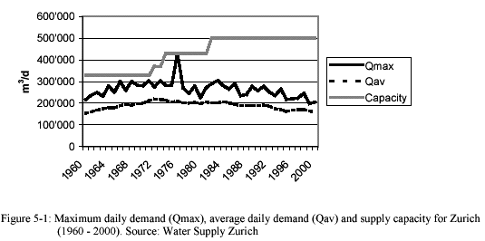

briefing


|
BRIEFING PART TWO The water supply of Zürich has been a public utility since its foundation in 1868 and since 1986 it has been financially independent, covering its costs with the income from the sale of water. Its practices in water supply management have been based on the development of large capacities to meet water demand at peak times. The actual capacity is 500,000 m2 per day while peak demand in 1998 reached only 250,000 m2 per day. Public opinion demands that water should be available in sufficient quantity with sufficient pressure at any time. Consequently, existing water extraction plants were extended when peak demand reached 99% of the capacity in July 1976. This has now resulted in large overcapacity.  |
next page
|